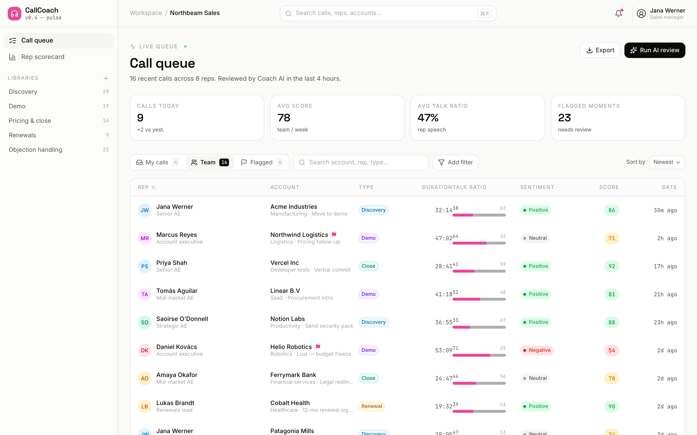
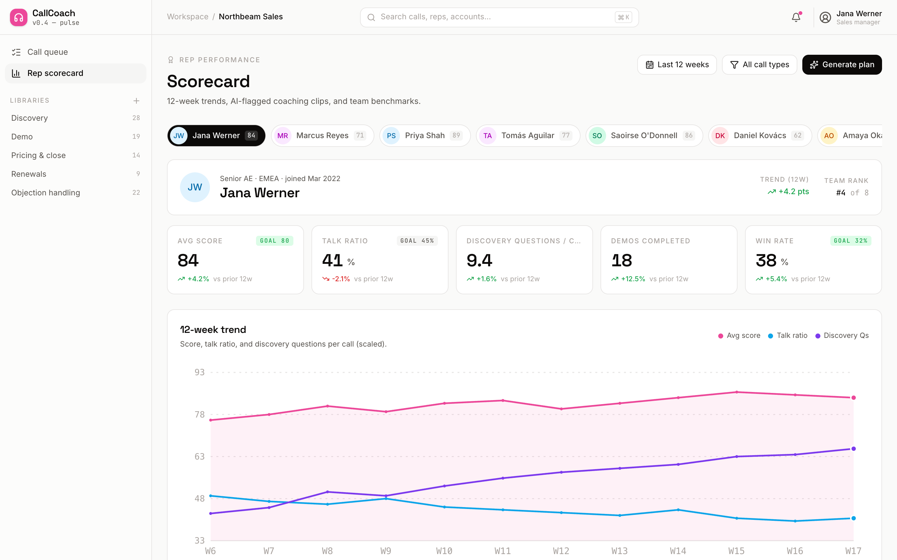
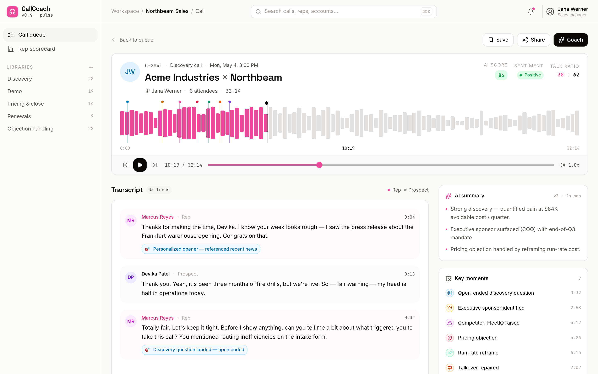

Discovery hits
GreenOpen questions that surfaced pain, budget or timeline — the ones that moved the deal forward. Reps see exactly which questions landed.
"What happens if this isn't solved by Q3?"Flagged · discovery hit at 04:12
Sales Call Coach records, transcribes and reviews every sales call — flagging the moments that matter, scoring each rep, and shipping five coaching clips a week. Coaching at the speed of sales.
Auto-transcribed with speaker diarization — no manual note-taking.
The model listens to the whole call and marks the moments a sales leader would circle by hand — then explains why, so reps learn the pattern, not just the note.
Open questions that surfaced pain, budget or timeline — the ones that moved the deal forward. Reps see exactly which questions landed.
Moments the prospect pushed back — price, timing, incumbent — and how the rep handled it. Perfect raw material for objection-handling drills.
"Um", "basically", "does that make sense" — the verbal tics that dilute authority. Tracked per call so reps can watch the count drop over time.
Where the rep spoke over the prospect or dominated the airtime. Paired with talk-ratio, it's the fastest fix for reps who don't leave room to listen.
Four steps, fully automatic. From the moment a call ends to the clip in a rep's queue, no one has to press record or rewatch an hour of audio.
Every call is captured and auto-transcribed with speaker diarization — who said what, timestamped.
The AI marks discovery hits, objections, filler words and talkovers — ~11 annotations on a typical call.
Talk ratio, sentiment and a call score roll up into a rep scorecard with 12-week trend lines.
Five short clips land in each rep's queue every week — the exact moments to watch, not the whole call.
Three surfaces reps and managers live in — the call queue, the rep scorecard, and the annotated transcript.
Sixteen calls reviewed and ranked at a glance — talk ratios, sentiment chips and an AI score on each, so managers know which calls to open first.

The call queue: 16 calls with talk ratios, sentiment and AI scores.
A per-rep scorecard with 12-week trend lines on the metrics that move deals — talk ratio, discovery, objection handling and call score — so 1:1s start with data, not gut feel.

The rep scorecard: 12-week trend lines on the metrics that move deals.
The full transcript with inline annotations — discovery hits, objections, filler words and talkovers marked right where they happen, so a coaching clip is one click away.

The transcript: inline AI annotations, timestamped and speaker-diarized.
Not a dashboard that gets ignored — a weekly loop that shows up in the numbers. Trends over 12 weeks, and a queue of clips instead of manual call review.
A rep pulling talk ratio down from dominating the call toward a healthier, listen-first balance.
Five moments queued for one rep — watch these, skip the hour of call audio.
See Sales Call Coach on your own calls — flagged moments, scorecards and a weekly clip queue, live in a 20-minute walkthrough.
Prefer email? buildspacelabs@vruoom.com